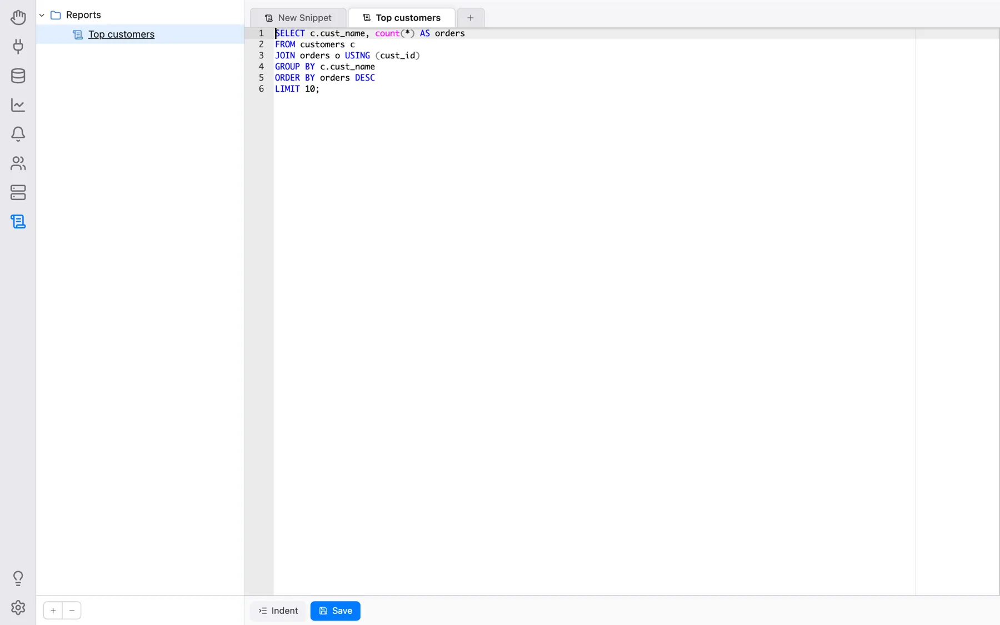

Snippets
Los snippets son fragmentos de texto (consultas, scripts, plantillas de comandos, notas) que guarda en OmniDB y reutiliza desde cualquier editor SQL. Se organizan en un árbol de carpetas, se almacenan en la propia base de datos de usuario de OmniDB (por lo que sobreviven a las actualizaciones) y son privados de cada usuario de OmniDB.
La sección Snippets
Haga clic en el icono Snippets (el pergamino) de la barra izquierda. La sección muestra el árbol de carpetas a la izquierda y las pestañas del editor de snippets a la derecha; el separador entre ambos puede arrastrarse.
Haga clic derecho en un espacio vacío del árbol para ver Actualizar, Nueva carpeta y Agregar snippet. Al hacer clic derecho en una carpeta se ofrece lo mismo, además de Renombrar carpeta y Eliminar carpeta; al hacer clic derecho en un snippet se ofrecen Editar, Renombrar y Eliminar. Al hacer doble clic en un snippet, este se abre en una pestaña del editor (o se cambia a ella, si ya está abierta). El botón + bajo el árbol añade un snippet a la carpeta seleccionada (o al nivel superior), y − elimina el elemento seleccionado.

Edición y guardado
Cada pestaña del editor es un editor SQL completo (resaltado de sintaxis, autocompletado, buscar y reemplazar) con los botones Sangría y Guardar debajo. La sección empieza siempre con una pestaña vacía Nuevo fragmento, y la pestaña + abre otra.
Un pequeño punto junto al título de una pestaña indica que tiene cambios sin guardar; al guardar desaparece, y al cerrar una pestaña solo se pide confirmación cuando realmente tiene cambios sin guardar. Guardar un snippet que se abrió desde el árbol lo sobrescribe. Guardar una pestaña nueva, sin nombre, abre en cambio un menú: Nuevo fragmento (pide un nombre y lo guarda en el nivel superior), SOBRESCRIBIR … para cada snippet existente y un submenú para cada carpeta con las mismas opciones dentro. Sobrescribir un snippet existente pide confirmación primero.
Atajos de teclado de la sección Snippets (pueden cambiarse en Configuración > Atajos de teclado > Snippets):
| Acción | Windows/Linux | Mac |
|---|---|---|
| Guardar snippet | Ctrl-S | Command-S |
| Nuevo snippet | Ctrl-N | Command-N |
| Cerrar pestaña de snippet | Ctrl-W | Command-W |
Uso de snippets desde una pestaña de consulta o de consola
Haga clic derecho dentro del editor de una pestaña de consulta o de consola:
- Guardar como snippet guarda el texto del editor como snippet, usando el mismo menú descrito arriba (un snippet nuevo, o sobrescribir uno existente, en cualquier carpeta);
- Usar snippet (se muestra en cuanto tiene al menos un snippet) inserta el texto del snippet elegido en la posición del cursor.